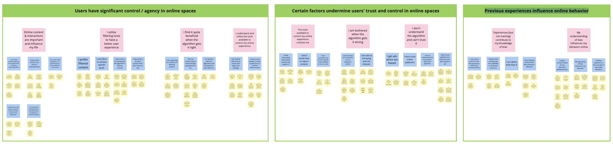
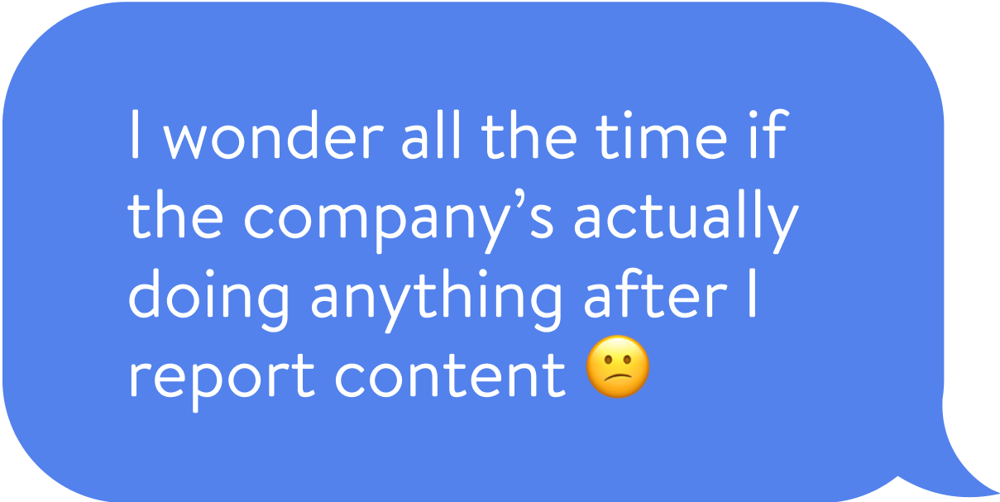
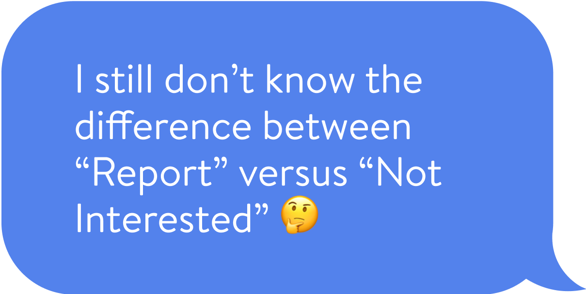
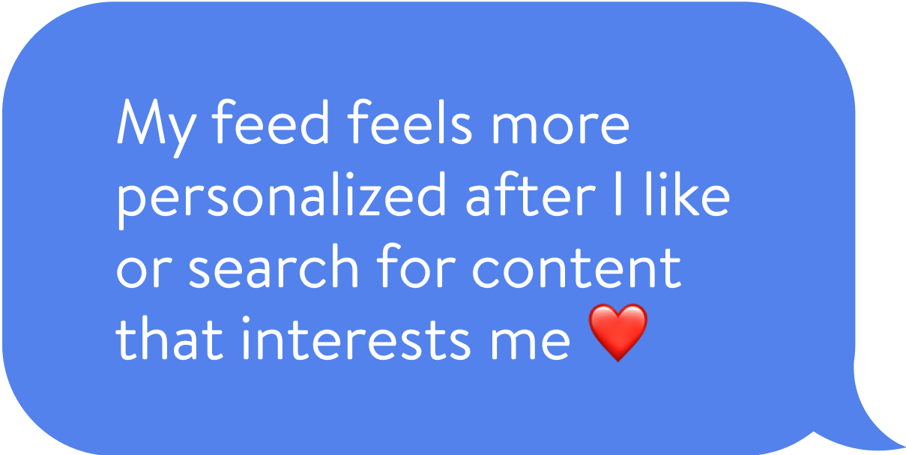
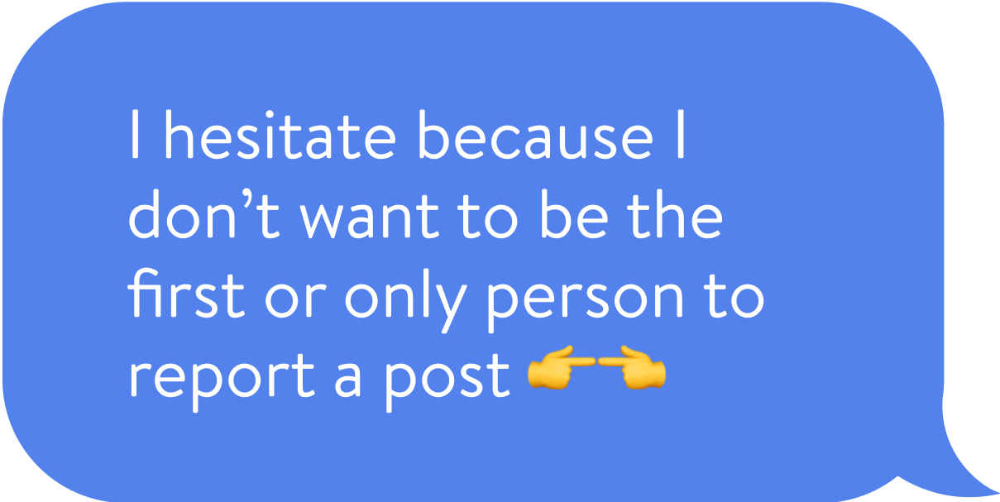

Every minute of the day, more than 500,000 pictures are shared on snapchat, over 400,000 tweets are sent, and over 40,000 pictures are shared on instagram. Who’s monitoring all this content?
We look to everyday users to help regulate it by researching what designs we can employ to encourage them to report online content that they find biased or offensive. This will help identify and combat undesirable content earlier.
Our research culminated with the proposed solution ‘CASPER’: a transparent content reporting process that includes a straightforward and easy to understand reporting content and give high-quality feedback to users.
The project built off and informed previous work done by Motahhare Eslami, Ken Holstein, Jason Hong, Hong Shen, and others who are researching algorithmic bias as it relates to design.
Our research looked it how we might motivate or facilitate users of online platforms to effectively recognize and report algorithmic bias.
After users report a piece of content, we found that they are more likely to continue to do so if they are provided feedback which helps them better recognize the value and impact of their report.
We first used used a think-aloud method to research the problem space. We had 5 users navigate Youtube and observed the process in which they filtered content, flagged videos, etc.
We found that most users who knew to look for it, prefered to click the 'not interested' button.
Afterwards, we used contextual inquiry methods, directed storytelling and artifact analysis, to find out how 5 different users interacted with online platforms in their daily life. We were particularly interested in how they filter their content, to what degree they were aware of the algorithm, and how often they reported or took action beyond disliking something.
We created a user empathy map to better inderstand our users after speaking with them. We also employed affinity diagramingto compare all our interviews and draw our conclusions.
Diagram built in Miro shows how we used various observations (notes in yellow) to draw three main conclusions from our interviews.
Users usually don’t receive feedback on what happens after they report, leading to uncertainty around the report’s impact and lack of incentive to do future reports.
Users are more willing to report online content if they receive adequate information and guidance on how to do so.
Users who proactively tailor their online platform content (through settings or purposeful interaction) are more satisfied with suggested content.
Users often interact differerently with online content based on other users’ behaviors and attitudes
User quote
User quote
User quote
User quote
After getting a better understanding of our users, we used speed dating to test out multiple solutions we storyboarded to see which solutions users connected with. We made over a dozen boards and tested them with 5 users.
A layout of all 15 storyboards we tested. Each of us came up with 3 boards to address a specific insight we had from our user research.
We envision a transparent content-reporting process that is straightforward and easy to understand or follow. After users report a piece of content, they can opt to receive updates on the status of their report, the actions that the online platform is taking as a result, etc.
Based on our research so far, we anticipate that a solution like this will help users better recognize the value and impact of their feedback, thus motivating them to continue reporting.
Overall, our solution is: